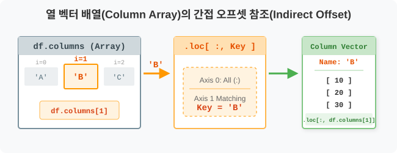
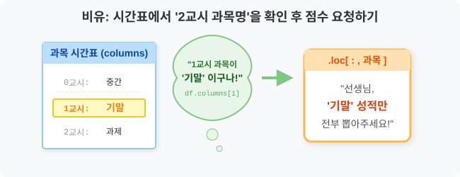
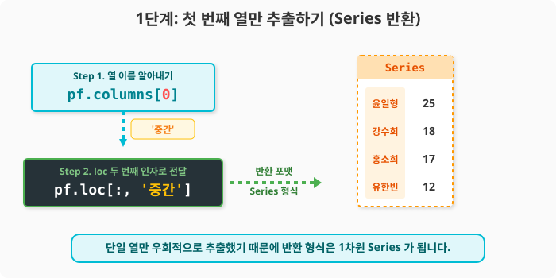
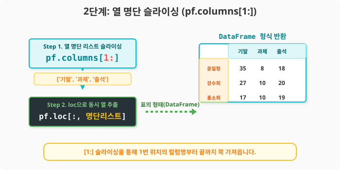
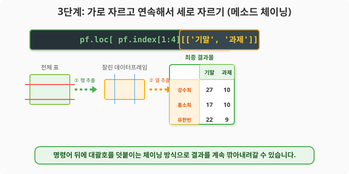

6.3.6 .loc 와 .columns 콤보로 순번(i) 기반 열 참조하기
💾 [실습 파일 다운로드] 본 강의의 전체 실습 코드를 직접 실행해 볼 수 있는 주피터 노트북 파일입니다. 아래 링크를 클릭하여 다운로드 후 VS Code에서 열어보세요.
- 📥 col_selection_loc_i_practice.ipynb 파일 다운로드 (클릭 또는 마우스 우클릭 후 ‘다른 이름으로 링크 저장’)
🧮 전산학적 의미: 열 벡터 배열(Column Array)의 간접 참조
6.3.4 장에서 .index 배열을 잘라 .loc에 밀어 넣었듯, 두 번째 축(Axis 1)의 레이블 배열인 .columns 속성을 활용해 열(Column) 이름을 동적으로 추출하여 .loc의 두 번째 파라미터 자리에 던져주는 간접 메모리 오프셋 참조(Indirect Offset Referencing) 방식입니다.

🏷️ 비유로 이해하기: 과목 이름 대신 ‘2교시 과목’ 부르기
- 여러분은 ‘중간’, ‘기말’, ‘과제’라는 과목명이 적혀있는 시간표(
pf.columns)를 들고 있습니다. - “기말고사 점수표 가져와!”(
.loc[:, '기말']) 라고 이름을 직접 부를 수도 있지만, “우리 반 시간표에서 두 번째(인덱스 1) 과목 점수표 가져와!” 라고 우회해서 시킬 수도 있습니다. - 컴퓨터가 “아, 시간표(
pf.columns) 두 번째 과목이 기말고사구나. 그럼 기말고사 점수표 줍니다!” 라고 번역해서 처리해 주는 과정입니다.

🪄 [실습 1] 준비물: 성적표 데이터
VS Code나 주피터 노트북을 열고 pandas_01.py 파일을 생성하여 단계별로 실습을 진행합니다.
1단계: 가상의 학급 성적표 생성
import pandas as pd
pf = pd.DataFrame(
data=[
[25, 35, 8, 18],
[18, 27, 10, 20],
[17, 17, 10, 19],
[12, 22, 9, 20],
[22, 34, 8, 16]
],
index=['윤일형', '강수희', '홍소희', '유한빈', '신수빈'],
columns=['중간', '기말', '과제', '출석']
)
🪄 [실습 2] 첫 번째 열(Column)만 빼오기
작성한 코드 아래에 다음 코드를 추가합니다.
1단계: 인덱스 번호 기반으로 단일 열 우회 추출
어떤 데이터프레임이든 상관없이 ‘무조건 제일 앞의 열 1개’를 뽑고 싶을 때 널리 쓰이는 패턴입니다. 자동화 스크립트를 짤 때 데이터의 컬럼명이 매번 바뀐다면 이 방법이 필수적입니다.
# pf.columns[0] 은 '중간' 이라는 문자열을 반환합니다.
print("첫 번째 열 이름:", pf.columns[0])
# 그 문자열을 loc의 두 번째 인자(열 자리)에 던집니다.
first_col = pf.loc[:, pf.columns[0]]
print("\n--- 첫 번째 과목 점수 (Series) ---")
print(first_col)
[실행 결과]
첫 번째 열 이름: 중간
--- 첫 번째 과목 점수 (Series) ---
윤일형 25
강수희 18
홍소희 17
유한빈 12
신수빈 22
Name: 중간, dtype: int64

표 형태(
DataFrame)로 감싸서 받고 싶다면, 열 이름을 뽑아낼 때부터 리스트로 묶어([ pf.columns[0] ]) 넘겨주면 됩니다!
🪄 [실습 3] 특정 범위의 열(Column) 그룹 뭉터기로 뽑기 (슬라이싱)
계속해서 동일한 파일에 아래 코드를 추가합니다.
1단계: 파이썬 리스트 슬라이싱 기법 활용
‘두 번째 열부터 끝까지 다!’ 같은 파이썬 리스트 슬라이싱 기법을 그대로 적용할 수 있습니다.
# 1번 인덱스('기말') 부터 끝까지의 컬럼명 명단을 가져옵니다.
col_slice = pf.columns[1:]
print("뽑힌 컬럼 명단:", col_slice.tolist())
# 뽑힌 명단을 냅다 loc에 집어넣습니다!
df_sliced_cols = pf.loc[:, col_slice]
print("\n--- 두 번째 과목부터 끝까지의 성적 ---")
print(df_sliced_cols)
[실행 결과]
뽑힌 컬럼 명단: ['기말', '과제', '출석']
--- 두 번째 과목부터 끝까지의 성적 ---
기말 과제 출석
윤일형 35 8 18
강수희 27 10 20
홍소희 17 10 19
유한빈 22 9 20
신수빈 34 8 16

🪄 [실습 4] 메소드 체이닝 (행도 자르고 열도 자르고!)
새로운 실습을 위해 pandas_02.py 파일을 생성합니다. 성적표 데이터(pf) 생성 코드를 상단에 복사한 뒤 실습을 진행합니다.
1단계: 다중 메소드 체이닝 기법 적용
앞서 6.3.4 장에서 배운 행 뽑기와 이어서 활용해 봅시다. 행 자리에는 .index[1:4] 명단을 주고, 거기서 반환된 결과에 다시 대괄호 [['기말', '과제']]를 열어 원하는 열만 추가로 골라낼 수 있습니다.
# 1. 1~3번 학생의 모든 성적을 뽑는다 (pf.loc[pf.index[1:4]])
# 2. 거기서 '기말'과 '과제' 열만 살린다 ([['기말', '과제']])
chain_df = pf.loc[pf.index[1:4]][['기말', '과제']]
print("--- 우회 검색 체인 액션 결과 ---")
print(chain_df)
[실행 결과]
--- 우회 검색 체인 액션 결과 ---
기말 과제
강수희 27 10
홍소희 17 10
유한빈 22 9

😎 데이터 분석 팁: 사실 숫자 인덱스 번호를 가지고 다룰 거라면 이어지는 장에서 배울
.iloc함수 하나면 모든 것이 해결됩니다. 하지만 속성(index,columns) 배열 객체를 파이썬 기본 리스트 다루듯 자유자재로 뽑아 쓸 수 있어야 진정한 판다스 고수로 거듭날 수 있습니다!